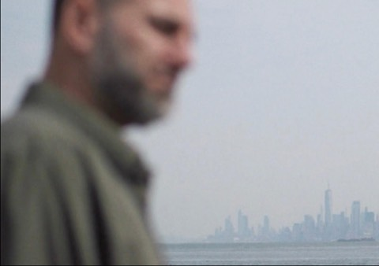

About the film
American Pain chronicles the rise of Chris and Jeff George, twin bodybuilders from Florida, who built the largest oxycodone trafficking network in US history. Through storefront pain clinics that dispensed pills at an alarming rate, with a cast of enablers that included physicians, family members, pharmaceutical companies, and even a DEA agent, the brothers drew busloads of addicts from across Appalachia and points beyond, raking in more than $500 million. Jeff George boasted they were creating a new kind of tourism, and ran “the Disneyland of pain clinics.” Drawing on hundreds of hours of wiretap recordings, undercover videos and exclusive interviews with key players and rivals in Florida’s pill mill boom, the film captures the greed and lack of remorse of home-grown drug kingpins, and the devastation they let loose.
At the festival
- 2022 Centerpiece · Friday, October 14, 2022 · 8:30 PM · Naval Heritage CenterScreening followed by Q&A with director Darren Foster, moderated by Scott Higham of the Washington Post.
More films on these topics
 RescueSine Plambech2026 · 90 min
RescueSine Plambech2026 · 90 min
The Accidental SpyAnthony Wonke2024 · 98 min- Phantom ParrotKate Stonehill2023 · 82 min
 The FacilitySeth Freed Wessler2021 · 26 min
The FacilitySeth Freed Wessler2021 · 26 min Poppy CrashAndalusia Knoll Soloff2019 · 11 min
Poppy CrashAndalusia Knoll Soloff2019 · 11 min Dark SunsJulien Elie2019 · 154 min
Dark SunsJulien Elie2019 · 154 min